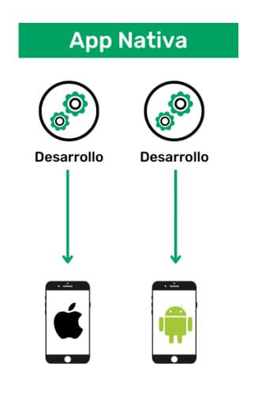
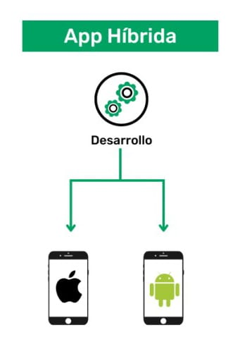
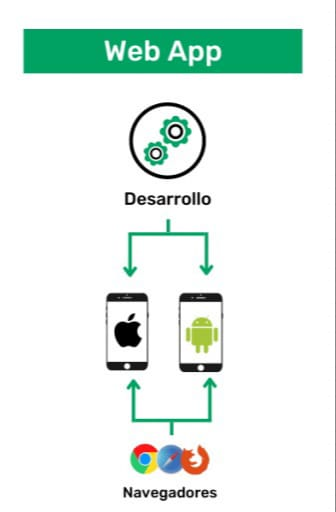

Las aplicaciones móviles se desarrollan con herramientas y lenguajes específicos para cada plataforma. En Android, por ejemplo, el IDE oficial es Android Studio
developer.android.com
developer.android.com
, que incluye editores, emuladores y asistentes de diseño. Para iOS se utiliza Xcode y lenguajes como Swift u Objective-C. Existen además frameworks multiplataforma: por ejemplo Flutter (Google) permite crear apps compiladas nativamente desde Dart
esflutter.dev
; React Native (JavaScript) o Xamarin (C#) también facilitan el desarrollo concurrente para Android e iOS. Los lenguajes comunes incluyen Java y Kotlin para Android, Swift/Objective-C para iOS, así como JavaScript (React Native, Ionic) o Dart (Flutter) para apps multiplataforma
scoreapps.com
Respecto a los tipos de aplicaciones móviles, existen básicamente tres categorías:
- Aplicaciones nativas: Se escriben con código y APIs propias de cada sistema operativo (por ejemplo, Java/Kotlin para Android, Swift/Objective-C para iOS)
appsflyer.com
. Ofrecen máximo acceso al hardware (GPS, cámara, acelerómetro) y alto rendimiento
appsflyer.com
- 
- Aplicaciones híbridas: Combinan elementos nativos y web. En la práctica son apps nativas que incorporan un navegador embebido para mostrar contenido HTML5/JS/CSS
appsflyer.com
aws.amazon.com
Permiten compartir la mayor parte del código entre plataformas (una sola app desplegada en iOS/Android)
appsflyer.com
- 
-
Aplicaciones web: Son sitios web optimizados para simular una app móvil en el navegador. No se instalan desde tiendas, sino que se acceden vía navegador con código HTML5/JS, lo que facilita su mantenimiento y despliegue multiplataforma
appsflyer.com
. Su desventaja es un desempeño y experiencia de usuario típicamente inferior al de las nativas.
- 